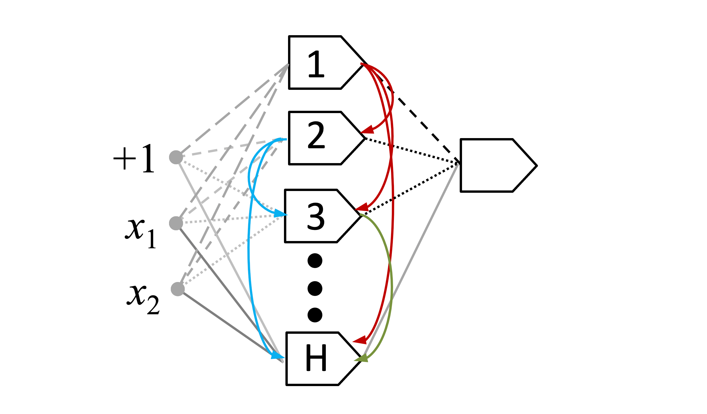

Redes de cascada-correlación
41:42 min | Última modificación: Mayo 31, 2021 | [YouTube]
[1]:
import warnings
warnings.filterwarnings("ignore")
## Definición
En este tipo de red neuronal, cada neurona de la capa oculta tiene conexiones hacia cada una de las neuronas ocultas siguientes (hacia delante) formando una “cascada”.

Caso de aplicación
[2]:
import pandas as pd
df = pd.read_csv(
"https://raw.githubusercontent.com/jdvelasq/datalabs/master/datasets/concrete.csv",
sep=",",
thousands=None,
decimal=".",
)
df.head()
[2]:
| cement | slag | ash | water | superplastic | coarseagg | fineagg | age | strength | |
|---|---|---|---|---|---|---|---|---|---|
| 0 | 540.0 | 0.0 | 0.0 | 162.0 | 2.5 | 1040.0 | 676.0 | 28 | 79.99 |
| 1 | 540.0 | 0.0 | 0.0 | 162.0 | 2.5 | 1055.0 | 676.0 | 28 | 61.89 |
| 2 | 332.5 | 142.5 | 0.0 | 228.0 | 0.0 | 932.0 | 594.0 | 270 | 40.27 |
| 3 | 332.5 | 142.5 | 0.0 | 228.0 | 0.0 | 932.0 | 594.0 | 365 | 41.05 |
| 4 | 198.6 | 132.4 | 0.0 | 192.0 | 0.0 | 978.4 | 825.5 | 360 | 44.30 |
Preparación de los datos
[3]:
import matplotlib.pyplot as plt
import seaborn as sns
#
# Los rangos de las variables numéricas son
# bastantes diferentes
#
plt.figure(figsize=(10, 6))
sns.boxplot(data=df)
plt.xticks(rotation=90);

[4]:
from sklearn.preprocessing import MinMaxScaler
#
# Se escalan todas las variables al rango [0, 1]
# para evitar problemas asociados a la escala
#
scaler = MinMaxScaler()
df_norm = pd.DataFrame(scaler.fit_transform(df), columns=df.columns)
plt.figure(figsize=(10, 6))
sns.boxplot(data=df_norm)
plt.xticks(rotation=90);

Modelo
[5]:
df_norm.head()
[5]:
| cement | slag | ash | water | superplastic | coarseagg | fineagg | age | strength | |
|---|---|---|---|---|---|---|---|---|---|
| 0 | 1.000000 | 0.000000 | 0.0 | 0.321086 | 0.07764 | 0.694767 | 0.205720 | 0.074176 | 0.967485 |
| 1 | 1.000000 | 0.000000 | 0.0 | 0.321086 | 0.07764 | 0.738372 | 0.205720 | 0.074176 | 0.741996 |
| 2 | 0.526256 | 0.396494 | 0.0 | 0.848243 | 0.00000 | 0.380814 | 0.000000 | 0.739011 | 0.472655 |
| 3 | 0.526256 | 0.396494 | 0.0 | 0.848243 | 0.00000 | 0.380814 | 0.000000 | 1.000000 | 0.482372 |
| 4 | 0.220548 | 0.368392 | 0.0 | 0.560703 | 0.00000 | 0.515698 | 0.580783 | 0.986264 | 0.522860 |
[6]:
import tensorflow as tf
X_train = df_norm.copy()
y_train_true = X_train.pop("strength")
dataset_train = tf.data.Dataset.from_tensor_slices(
(X_train.values, y_train_true.values)
).batch(1)
for feat, targ in dataset_train.take(5):
print ('Features: {}, Target: {}'.format(feat, targ))
Features: [[1. 0. 0. 0.32108626 0.07763975 0.69476744
0.20572002 0.07417582]], Target: [0.96748474]
Features: [[1. 0. 0. 0.32108626 0.07763975 0.73837209
0.20572002 0.07417582]], Target: [0.74199576]
Features: [[0.52625571 0.39649416 0. 0.84824281 0. 0.38081395
0. 0.73901099]], Target: [0.47265479]
Features: [[0.52625571 0.39649416 0. 0.84824281 0. 0.38081395
0. 1. ]], Target: [0.48237199]
Features: [[0.22054795 0.36839176 0. 0.56070288 0. 0.51569767
0.58078274 0.98626374]], Target: [0.52286035]
[7]:
cc_model = tf.keras.Sequential(
[
tf.keras.layers.Dense(
1,
input_shape=(None, 8),
activation="relu",
name="layer1",
),
]
)
cc_model.compile(
optimizer="adam",
loss="mean_squared_error",
)
cc_model.build()
cc_model.summary()
cc_model.fit(
dataset_train,
epochs=10,
verbose=1,
)
Model: "sequential"
_________________________________________________________________
Layer (type) Output Shape Param #
=================================================================
layer1 (Dense) (None, None, 1) 9
=================================================================
Total params: 9
Trainable params: 9
Non-trainable params: 0
_________________________________________________________________
Epoch 1/10
WARNING:tensorflow:Model was constructed with shape (None, None, 8) for input KerasTensor(type_spec=TensorSpec(shape=(None, None, 8), dtype=tf.float32, name='layer1_input'), name='layer1_input', description="created by layer 'layer1_input'"), but it was called on an input with incompatible shape (None, 8).
WARNING:tensorflow:Model was constructed with shape (None, None, 8) for input KerasTensor(type_spec=TensorSpec(shape=(None, None, 8), dtype=tf.float32, name='layer1_input'), name='layer1_input', description="created by layer 'layer1_input'"), but it was called on an input with incompatible shape (None, 8).
1030/1030 [==============================] - 1s 780us/step - loss: 0.0669
Epoch 2/10
1030/1030 [==============================] - 1s 755us/step - loss: 0.0443
Epoch 3/10
1030/1030 [==============================] - 1s 760us/step - loss: 0.0334
Epoch 4/10
1030/1030 [==============================] - 1s 759us/step - loss: 0.0289
Epoch 5/10
1030/1030 [==============================] - 1s 822us/step - loss: 0.0272
Epoch 6/10
1030/1030 [==============================] - 1s 825us/step - loss: 0.0264
Epoch 7/10
1030/1030 [==============================] - 1s 782us/step - loss: 0.0258
Epoch 8/10
1030/1030 [==============================] - 1s 795us/step - loss: 0.0253
Epoch 9/10
1030/1030 [==============================] - 1s 796us/step - loss: 0.0249
Epoch 10/10
1030/1030 [==============================] - 1s 799us/step - loss: 0.0245
[7]:
<tensorflow.python.keras.callbacks.History at 0x7ff5a849c828>
Modelo con H=1
[8]:
#
# Diccionario para guardar los resultados para cada modelo
#
results = {}
[9]:
def compile_and_evaluate(model):
model.compile(optimizer="adam", loss="mean_squared_error")
model.fit(dataset_train, epochs=20, verbose=1)
return model.evaluate(dataset_train, verbose=0)
[10]:
class CC_1(tf.keras.Model):
def __init__(self, name="cascade-correlation", **kwargs):
super(CC_1, self).__init__(name=name, **kwargs)
self.inputs = tf.keras.Input(shape=(None, 8))
self.h1 = tf.keras.layers.Dense(units=1)
def call(self, inputs):
return self.h1(inputs)
results["H=1"] = compile_and_evaluate(CC_1())
Epoch 1/20
1030/1030 [==============================] - 1s 778us/step - loss: 0.1786
Epoch 2/20
1030/1030 [==============================] - 1s 795us/step - loss: 0.0875
Epoch 3/20
1030/1030 [==============================] - 1s 788us/step - loss: 0.0520
Epoch 4/20
1030/1030 [==============================] - 1s 800us/step - loss: 0.0362
Epoch 5/20
1030/1030 [==============================] - 1s 815us/step - loss: 0.0298
Epoch 6/20
1030/1030 [==============================] - 1s 815us/step - loss: 0.0274
Epoch 7/20
1030/1030 [==============================] - 1s 838us/step - loss: 0.0264
Epoch 8/20
1030/1030 [==============================] - 1s 802us/step - loss: 0.0258
Epoch 9/20
1030/1030 [==============================] - 1s 781us/step - loss: 0.0254
Epoch 10/20
1030/1030 [==============================] - 1s 811us/step - loss: 0.0250
Epoch 11/20
1030/1030 [==============================] - 1s 796us/step - loss: 0.0246
Epoch 12/20
1030/1030 [==============================] - 1s 770us/step - loss: 0.0243
Epoch 13/20
1030/1030 [==============================] - 1s 879us/step - loss: 0.0240
Epoch 14/20
1030/1030 [==============================] - 1s 955us/step - loss: 0.0238
Epoch 15/20
1030/1030 [==============================] - 1s 791us/step - loss: 0.0236
Epoch 16/20
1030/1030 [==============================] - 1s 794us/step - loss: 0.0234
Epoch 17/20
1030/1030 [==============================] - 1s 786us/step - loss: 0.0233 0s - loss: 0.023
Epoch 18/20
1030/1030 [==============================] - 1s 754us/step - loss: 0.0231
Epoch 19/20
1030/1030 [==============================] - 1s 845us/step - loss: 0.0230
Epoch 20/20
1030/1030 [==============================] - 1s 763us/step - loss: 0.0230
Modelo con H=2
[11]:
class CC_2(tf.keras.Model):
def __init__(self, name="cascade-correlation", **kwargs):
super(CC_2, self).__init__(name=name, **kwargs)
#
self.inputs = tf.keras.Input(shape=(None,8))
self.h1 = tf.keras.layers.Dense(units=1)
self.h2 = tf.keras.layers.Dense(units=1)
#
self.cc1_2 = tf.keras.layers.Dense(1, use_bias=False)
def call(self, inputs):
#
h1 = self.h1(inputs)
h1 = tf.keras.activations.sigmoid(h1)
#
h2 = self.h2(inputs)
h2 = h2 + self.cc1_2(h1)
h2 = tf.keras.activations.sigmoid(h2)
#
return h2
results["H=2"] = compile_and_evaluate(CC_2())
Epoch 1/20
1030/1030 [==============================] - 1s 863us/step - loss: 0.0543
Epoch 2/20
1030/1030 [==============================] - 1s 911us/step - loss: 0.0478
Epoch 3/20
1030/1030 [==============================] - 1s 803us/step - loss: 0.0401
Epoch 4/20
1030/1030 [==============================] - 1s 798us/step - loss: 0.0340
Epoch 5/20
1030/1030 [==============================] - 1s 785us/step - loss: 0.0295
Epoch 6/20
1030/1030 [==============================] - 1s 783us/step - loss: 0.0265
Epoch 7/20
1030/1030 [==============================] - 1s 802us/step - loss: 0.0248
Epoch 8/20
1030/1030 [==============================] - 1s 783us/step - loss: 0.0238 0s - loss: 0.02
Epoch 9/20
1030/1030 [==============================] - 1s 773us/step - loss: 0.0234
Epoch 10/20
1030/1030 [==============================] - 1s 790us/step - loss: 0.0233
Epoch 11/20
1030/1030 [==============================] - 1s 760us/step - loss: 0.0232
Epoch 12/20
1030/1030 [==============================] - 1s 786us/step - loss: 0.0233
Epoch 13/20
1030/1030 [==============================] - 1s 788us/step - loss: 0.0234
Epoch 14/20
1030/1030 [==============================] - 1s 777us/step - loss: 0.0234
Epoch 15/20
1030/1030 [==============================] - 1s 785us/step - loss: 0.0235
Epoch 16/20
1030/1030 [==============================] - 1s 768us/step - loss: 0.0236
Epoch 17/20
1030/1030 [==============================] - 1s 823us/step - loss: 0.0236
Epoch 18/20
1030/1030 [==============================] - 1s 801us/step - loss: 0.0236
Epoch 19/20
1030/1030 [==============================] - 1s 777us/step - loss: 0.0236
Epoch 20/20
1030/1030 [==============================] - 1s 923us/step - loss: 0.0236
Modelo con H=3
[12]:
class CC_3(tf.keras.Model):
def __init__(self, name="cascade-correlation", **kwargs):
super(CC_3, self).__init__(name=name, **kwargs)
#
self.inputs = tf.keras.Input(shape=(None,8))
self.h1 = tf.keras.layers.Dense(units=1)
self.h2 = tf.keras.layers.Dense(units=1)
self.h3 = tf.keras.layers.Dense(units=1)
#
self.cc1_2 = tf.keras.layers.Dense(1, use_bias=False)
self.cc1_3 = tf.keras.layers.Dense(1, use_bias=False)
self.cc2_3 = tf.keras.layers.Dense(1, use_bias=False)
def call(self, inputs):
h1 = self.h1(inputs)
h1 = tf.keras.activations.sigmoid(h1)
h2 = self.h2(inputs)
h2 = h2 + self.cc1_2(h1)
h2 = tf.keras.activations.sigmoid(h2)
h3 = self.h3(inputs)
h3 = h3 + self.cc1_3(h1) + self.cc2_3(h2)
h3 = tf.keras.activations.sigmoid(h3)
return h3
results["H=3"] = compile_and_evaluate(CC_3())
Epoch 1/20
1030/1030 [==============================] - 1s 956us/step - loss: 0.0528
Epoch 2/20
1030/1030 [==============================] - 1s 901us/step - loss: 0.0389
Epoch 3/20
1030/1030 [==============================] - 1s 902us/step - loss: 0.0314
Epoch 4/20
1030/1030 [==============================] - 1s 888us/step - loss: 0.0271
Epoch 5/20
1030/1030 [==============================] - 1s 906us/step - loss: 0.0249
Epoch 6/20
1030/1030 [==============================] - 1s 876us/step - loss: 0.0238
Epoch 7/20
1030/1030 [==============================] - 1s 878us/step - loss: 0.0233
Epoch 8/20
1030/1030 [==============================] - 1s 871us/step - loss: 0.0231
Epoch 9/20
1030/1030 [==============================] - 1s 876us/step - loss: 0.0231
Epoch 10/20
1030/1030 [==============================] - 1s 828us/step - loss: 0.0232
Epoch 11/20
1030/1030 [==============================] - 1s 821us/step - loss: 0.0232
Epoch 12/20
1030/1030 [==============================] - 1s 851us/step - loss: 0.0233
Epoch 13/20
1030/1030 [==============================] - 1s 825us/step - loss: 0.0234
Epoch 14/20
1030/1030 [==============================] - 1s 856us/step - loss: 0.0234
Epoch 15/20
1030/1030 [==============================] - 1s 820us/step - loss: 0.0234
Epoch 16/20
1030/1030 [==============================] - 1s 835us/step - loss: 0.0234
Epoch 17/20
1030/1030 [==============================] - 1s 842us/step - loss: 0.0235
Epoch 18/20
1030/1030 [==============================] - 1s 866us/step - loss: 0.0234
Epoch 19/20
1030/1030 [==============================] - 1s 864us/step - loss: 0.0234
Epoch 20/20
1030/1030 [==============================] - 1s 854us/step - loss: 0.0234
Modelo con H=4
[13]:
class CC_4(tf.keras.Model):
def __init__(self, name="cascade-correlation", **kwargs):
super(CC_4, self).__init__(name=name, **kwargs)
#
self.inputs = tf.keras.Input(shape=(None,8))
self.h1 = tf.keras.layers.Dense(units=1)
self.h2 = tf.keras.layers.Dense(units=1)
self.h3 = tf.keras.layers.Dense(units=1)
self.h4 = tf.keras.layers.Dense(units=1)
#
self.cc1_2 = tf.keras.layers.Dense(1, use_bias=False)
self.cc1_3 = tf.keras.layers.Dense(1, use_bias=False)
self.cc1_4 = tf.keras.layers.Dense(1, use_bias=False)
self.cc2_3 = tf.keras.layers.Dense(1, use_bias=False)
self.cc2_4 = tf.keras.layers.Dense(1, use_bias=False)
self.cc3_4 = tf.keras.layers.Dense(1, use_bias=False)
def call(self, inputs):
h1 = self.h1(inputs)
h1 = tf.keras.activations.sigmoid(h1)
h2 = self.h2(inputs)
h2 = h2 + self.cc1_2(h1)
h2 = tf.keras.activations.sigmoid(h2)
h3 = self.h3(inputs)
h3 = h3 + self.cc1_3(h1) + self.cc2_3(h2)
h3 = tf.keras.activations.sigmoid(h3)
h4 = self.h4(inputs)
h4 = h4 + self.cc1_4(h1) + self.cc2_4(h2) + self.cc3_4(h3)
h4 = tf.keras.activations.sigmoid(h4)
return h4
results["H=4"] = compile_and_evaluate(CC_4())
Epoch 1/20
1030/1030 [==============================] - 2s 1ms/step - loss: 0.0892
Epoch 2/20
1030/1030 [==============================] - 1s 1ms/step - loss: 0.0484
Epoch 3/20
1030/1030 [==============================] - 1s 1ms/step - loss: 0.0370
Epoch 4/20
1030/1030 [==============================] - 1s 1ms/step - loss: 0.0303
Epoch 5/20
1030/1030 [==============================] - 1s 990us/step - loss: 0.0266
Epoch 6/20
1030/1030 [==============================] - 1s 930us/step - loss: 0.0247
Epoch 7/20
1030/1030 [==============================] - 1s 978us/step - loss: 0.0238 0s - loss: 0.02
Epoch 8/20
1030/1030 [==============================] - 1s 979us/step - loss: 0.0234
Epoch 9/20
1030/1030 [==============================] - 1s 936us/step - loss: 0.0232
Epoch 10/20
1030/1030 [==============================] - 1s 960us/step - loss: 0.0231
Epoch 11/20
1030/1030 [==============================] - 1s 955us/step - loss: 0.0231
Epoch 12/20
1030/1030 [==============================] - 1s 958us/step - loss: 0.0230
Epoch 13/20
1030/1030 [==============================] - 1s 922us/step - loss: 0.0229
Epoch 14/20
1030/1030 [==============================] - 1s 939us/step - loss: 0.0227
Epoch 15/20
1030/1030 [==============================] - 1s 929us/step - loss: 0.0225
Epoch 16/20
1030/1030 [==============================] - 1s 963us/step - loss: 0.0223
Epoch 17/20
1030/1030 [==============================] - 1s 950us/step - loss: 0.0221
Epoch 18/20
1030/1030 [==============================] - 1s 917us/step - loss: 0.0218
Epoch 19/20
1030/1030 [==============================] - 1s 951us/step - loss: 0.0215
Epoch 20/20
1030/1030 [==============================] - 1s 928us/step - loss: 0.0211
Modelo con H=5
[14]:
class CC_5(tf.keras.Model):
def __init__(self, name="cascade-correlation", **kwargs):
super(CC_5, self).__init__(name=name, **kwargs)
#
self.inputs = tf.keras.Input(shape=(None,8))
self.h1 = tf.keras.layers.Dense(units=1)
self.h2 = tf.keras.layers.Dense(units=1)
self.h3 = tf.keras.layers.Dense(units=1)
self.h4 = tf.keras.layers.Dense(units=1)
self.h5 = tf.keras.layers.Dense(units=1)
#
self.cc1_2 = tf.keras.layers.Dense(1, use_bias=False)
self.cc1_3 = tf.keras.layers.Dense(1, use_bias=False)
self.cc1_4 = tf.keras.layers.Dense(1, use_bias=False)
self.cc1_5 = tf.keras.layers.Dense(1, use_bias=False)
self.cc2_3 = tf.keras.layers.Dense(1, use_bias=False)
self.cc2_4 = tf.keras.layers.Dense(1, use_bias=False)
self.cc2_5 = tf.keras.layers.Dense(1, use_bias=False)
self.cc3_4 = tf.keras.layers.Dense(1, use_bias=False)
self.cc3_5 = tf.keras.layers.Dense(1, use_bias=False)
self.cc4_5 = tf.keras.layers.Dense(1, use_bias=False)
def call(self, inputs):
h1 = self.h1(inputs)
h1 = tf.keras.activations.sigmoid(h1)
h2 = self.h2(inputs)
h2 = h2 + self.cc1_2(h1)
h2 = tf.keras.activations.sigmoid(h2)
h3 = self.h3(inputs)
h3 = h3 + self.cc1_3(h1) + self.cc2_3(h2)
h3 = tf.keras.activations.sigmoid(h3)
h4 = self.h4(inputs)
h4 = h4 + self.cc1_4(h1) + self.cc2_4(h2) + self.cc3_4(h3)
h4 = tf.keras.activations.sigmoid(h4)
h5 = self.h5(inputs)
h5 = h5 + self.cc1_5(h1) + self.cc2_5(h2) + self.cc3_5(h3) + self.cc4_5(h4)
h5 = tf.keras.activations.sigmoid(h5)
return h5
results["H=5"] = compile_and_evaluate(CC_5())
Epoch 1/20
1030/1030 [==============================] - 2s 1ms/step - loss: 0.1110
Epoch 2/20
1030/1030 [==============================] - 1s 1ms/step - loss: 0.0445
Epoch 3/20
1030/1030 [==============================] - 1s 1ms/step - loss: 0.0331
Epoch 4/20
1030/1030 [==============================] - 1s 1ms/step - loss: 0.0267
Epoch 5/20
1030/1030 [==============================] - 1s 1ms/step - loss: 0.0242
Epoch 6/20
1030/1030 [==============================] - 1s 1ms/step - loss: 0.0234
Epoch 7/20
1030/1030 [==============================] - 1s 1ms/step - loss: 0.0232
Epoch 8/20
1030/1030 [==============================] - 1s 1ms/step - loss: 0.0233
Epoch 9/20
1030/1030 [==============================] - 1s 1ms/step - loss: 0.0234
Epoch 10/20
1030/1030 [==============================] - 1s 1ms/step - loss: 0.0235
Epoch 11/20
1030/1030 [==============================] - 1s 1ms/step - loss: 0.0235
Epoch 12/20
1030/1030 [==============================] - 1s 1ms/step - loss: 0.0235
Epoch 13/20
1030/1030 [==============================] - 1s 961us/step - loss: 0.0235
Epoch 14/20
1030/1030 [==============================] - 1s 1ms/step - loss: 0.0235
Epoch 15/20
1030/1030 [==============================] - 1s 1ms/step - loss: 0.0234
Epoch 16/20
1030/1030 [==============================] - 1s 1ms/step - loss: 0.0234
Epoch 17/20
1030/1030 [==============================] - 1s 1ms/step - loss: 0.0233
Epoch 18/20
1030/1030 [==============================] - 1s 1ms/step - loss: 0.0233
Epoch 19/20
1030/1030 [==============================] - 1s 1ms/step - loss: 0.0232
Epoch 20/20
1030/1030 [==============================] - 1s 1ms/step - loss: 0.0231
Resultados
[15]:
results
[15]:
{'H=1': 0.01893024519085884,
'H=2': 0.017939146608114243,
'H=3': 0.018387898802757263,
'H=4': 0.016703836619853973,
'H=5': 0.01825805753469467}